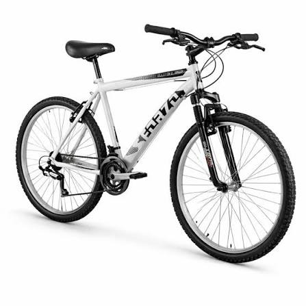
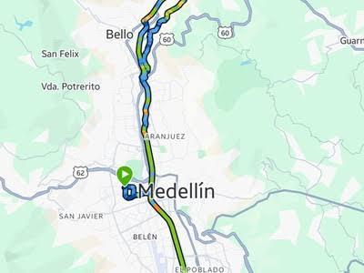
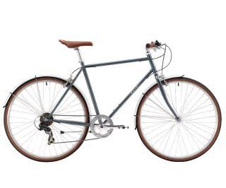
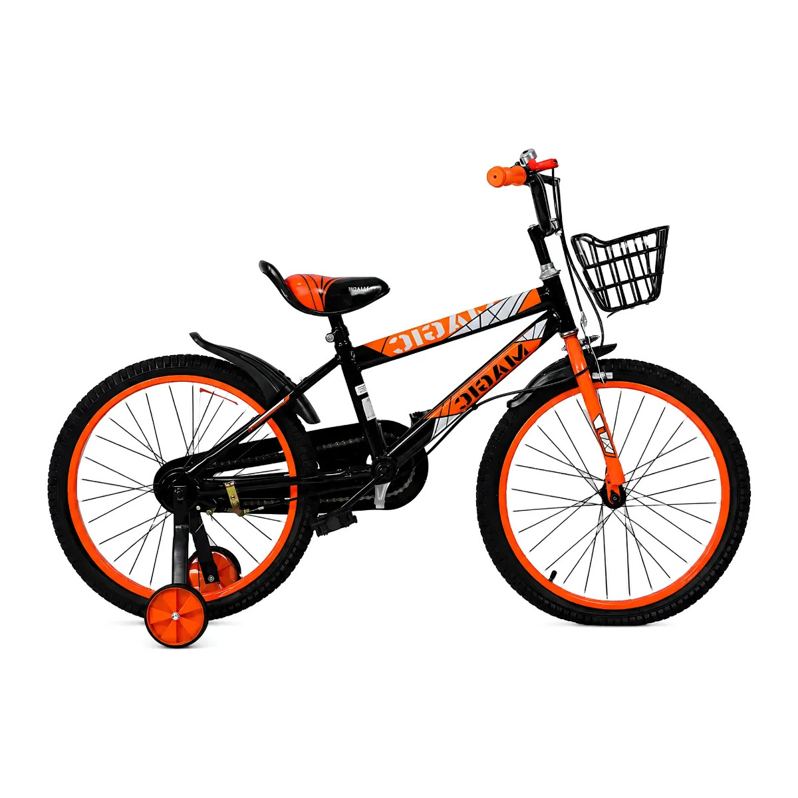
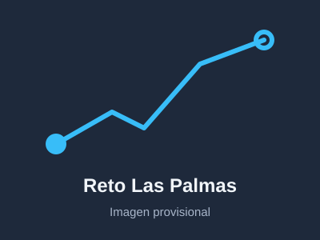

Alquiler de bicicletas

Bicicletas urbanas y de montaña por horas o por días. Todas las tarifas incluyen casco y candado.
Somos un emprendimiento paisa apasionado por la movilidad sostenible y el turismo sobre dos ruedas. Desde 2021 ayudamos a locales y visitantes a descubrir la ciudad de una forma diferente, limpia y divertida. Si quieres pasar a vernos, mira dónde encontrarnos.
Bicicletas urbanas y de montaña por horas o por días. Todas las tarifas incluyen casco y candado.

Sube las lomas de Medellín sin llegar agotado. Ideales para recorridos largos y para quienes apenas empiezan a pedalear en la ciudad.

Rutas turísticas y culturales por lugares representativos de Medellín, acompañados por guías locales. Salen los sábados y domingos a las 7:00 a. m.

Ajustes rápidos, inflado de llantas y reparación de pinchazos para que nunca te quedes varado en la ruta.

Cómoda y liviana para las ciclorrutas.
$10.000 por hora

Se dobla en segundos; ideal para combinar con el metro.
$12.000 por hora

Suspensión delantera y 21 cambios para las subidas.
$15.000 por hora

Para rutas mixtas de asfalto y destapado.
$18.000 por hora

Asistencia eléctrica con 45 km de autonomía.
$25.000 por hora

Para niños de 6 a 10 años.
$8.000 por hora

Para dos personas; perfecta para pasear en pareja.
$20.000 por hora
Nivel: Fácil

Nivel: Medio

Nivel: Difícil
Estamos en El Poblado, Medellín.
Ver nuestra ubicación en Google Maps (abre en otra pestaña)
Escríbenos a hola@ruedalibre.example